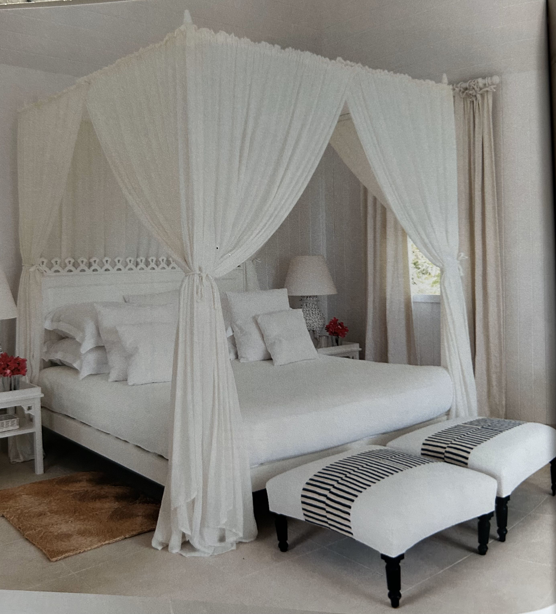
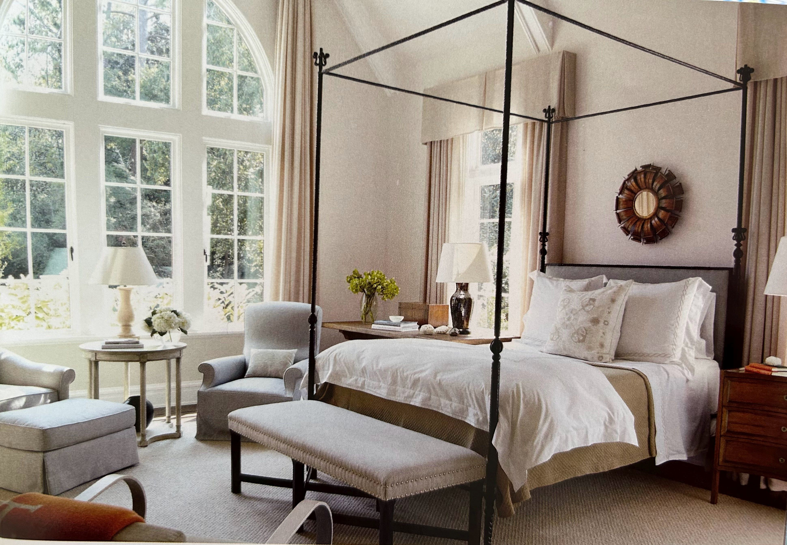
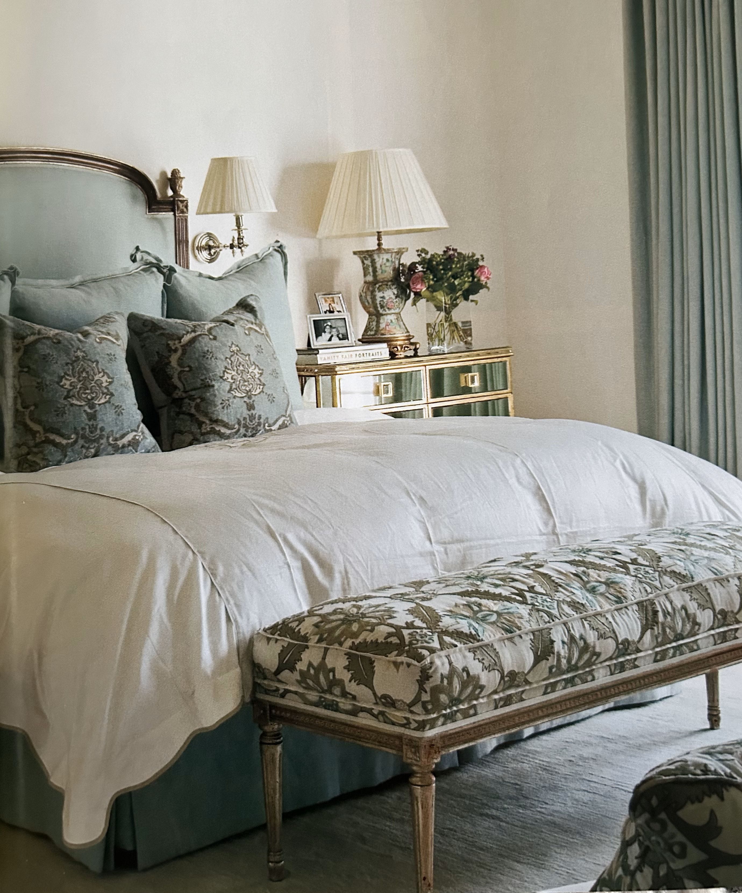
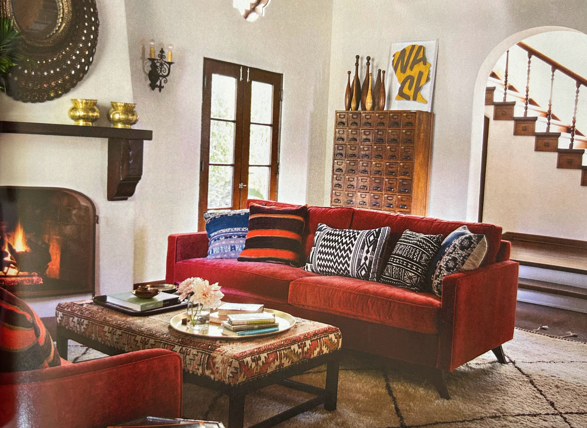
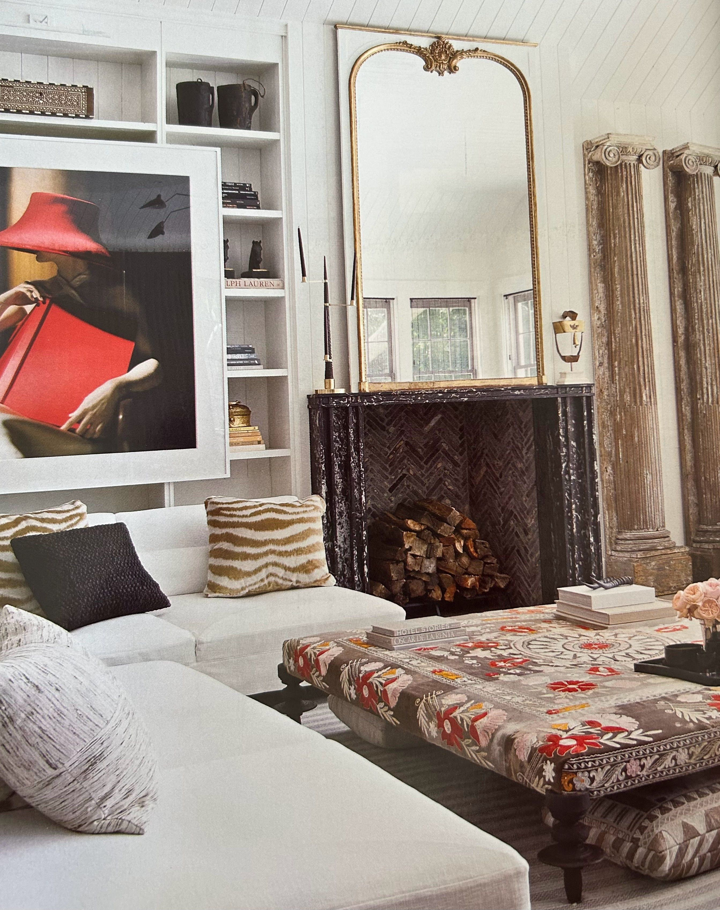

Inspiration for your Footstool
Lassen Sie sich von unseren vielfältigen Beispielen inspirieren! Hier sehen Sie, wie individuell und vielseitig Footstools gestaltet und eingesetzt werden können – ob als stilvolles Wohnaccessoire, praktische Sitzgelegenheit oder elegantes Highlight im Schlafzimmer. Jeder Footstool wird nach Ihren Wünschen gefertigt und passt sich perfekt Ihrem Zuhause an.
Lassen Sie sich von unseren vielfältigen Beispielen inspirieren! Hier sehen Sie, wie individuell und vielseitig Footstools gestaltet und eingesetzt werden können – ob als stilvolles Wohnaccessoire, praktische Sitzgelegenheit oder elegantes Highlight im Schlafzimmer. Jeder Footstool wird nach Ihren Wünschen gefertigt und passt sich perfekt Ihrem Zuhause an.




